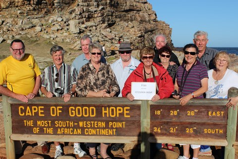
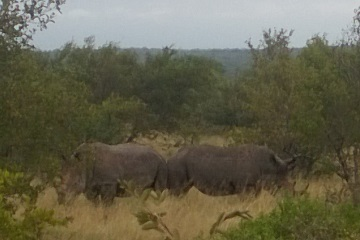

Maureen Fitzsimon's wildlife tour of Southern Africa 2013
Part One: South Africa, Kruger and The Garden Route
Thursday 18 April
Brisbane -> Perth -> Johannesburg -> Hoedspruit

Mike H, Peter, Robert, Joanne, Mike F, Maureen, Bob, Gay, Elizabeth, Mike T & Wendy at Cape of Good Hope
Well, the adventure begins! After a bit of a flurry at work, cleaning the house etc., went to clean the pool just before we left for the airport at 2pm, and discovered there was no output from the chlorinator. Hurried instructions to Robbie re emergency looking after the pool. Meanwhile, Mike was in a flap because our email server was down.
Suzanne, with granddaughter, Eva, came to pick us up. At least Eva was calm, cool and collected! Three year olds these days are so mature!
Had a great flight on Qantas to Perth. On boarding the aircraft I spotted an iPad in my seat pocket. Stupid me rushed it to the crew, hoping to catch the poor person who left it on the plane! It turns out that EVERY pocket has an iPad, courtesy of Qantas, to stream movies and entertainment. Gave the staff a good laugh! The iPad hang over a brace at the back of the seat in front and are EXCELLENT!
Just after arriving in Perth, Mike 3 remembered that he had forgotten the only piece of documentation the travel agent had sent to him. Wish I had known it existed! All 50,000 other pieces of documentation were sent to me, and I had them! Emergency phone call to eldest son, who sorted it. Yikes! Peter is leaving on a cruise tomorrow and will be uncontactable.
Met up with 7 of those in our group in Perth. Wendy and Mike number 1 live in Perth, We have 3 Mikes, 2 Roberts, and 2 couples with the surname "Taylor" in our group of 11. Two of the Taylors arrived in Joberg a couple of days ago. South African Airlines were not bad, although the seats were a test for aching backs and hips, especially as it was freezing on board.
Johannesburg airport is huge - and I've seen a jolly lot of airports. Luckily, we had more than 5 hours between Jo'burg and our trip to Hoedspruit. First of all, Wendy and Mike No 1 were the only ones to receive their luggage. After a very long time, they found another container of bags! Yea! Then we were like headless chooks trying to find the check in for the onward flight.
Onwards to "The Chip Shop" to buy data for our iPad, and some of the phones. I now have an international TravelSIM for an old phone, bought at home. See below for the number. This all took about 90 minutes!! Wendy was told her phone was unlocked, and, of course, it wasn't. We met some lovely people in the queue. Andy and Brenda WILL be pleased that we decided to invite them all to the wedding!
Off to Hoedspruit, and then on to Kruger
My phone number here is +37281061871.
The code: Mike Taylor is Mike 1; Mike Hales is Mike 2; Mike Fitz is Mike 3; Rob Ahern is Robert; Robert Taylor is Bob!
Cheers, Maureen.
Friday 19 April
Hoedspruit
The rainy weather cleared soon after the plane left for Hoedspruit. Wendy had a bit of a freak out when she saw the twin prop propellers on the aircraft. Luckily, these days, you don't have to give the propellers a good push to get the plane going.
Landing at Hoedspruit, we had a sense of really being in Africa. Setting off in a van for Mohlabetsi Safari Lodge, an hour away, we saw warthogs, giraffes, native birds, and Impala.
The Lodge is exquisite. Each couple (or Mick Hales) is in a round, traditional African dwelling. Our showers are outside, but private. There are only 16 guests, including our group.
We had lunch in the garden, enjoying sunshine, a light breeze, and the spectacle of the resort dog very busily keeping a myriad of monkeys from leaping from the trees to steal our food.
Then off in open top 4WDs, bush bashing for 3 hours of spotting wildlife. A "Sundowners" stop was had to sip a red wine and nibblies, as the sun set.
Returning to the Lodge, we enjoyed a beautiful dinner, sitting at a table encircling a campfire. Now... Sleep! And up at 5.30 for another safari.
Cheers,
Maureen.
Saturday 20 April
Mohlabetsi Safari
Have solved the problem of those pesky patients and nursing homes who ring me when I'm overseas, running up MY phone bill. I drowned the phone! Very effective.

Two white rhinos in "You watch my back; I'll watch yours" position, Mohlabetsi
This morning we were up bright as buttons at 5.30am, and headed off for our morning safari here at Mohlabetsi Lodge, Kruger National Park. As usual, we saw lots of impalas, giraffe, and zebras, and Elands, Kudus, hawks, other birds, and Mikes 2 and 3 were in the other 4WD and had a really close encounter with several rhinos. We saw a mostly submerged hippo, (and yesterday a crocodile). Also a hyena den.
Our rangers are very fond of tracking piles of poo. At one stage, they left the vehicle on foot, without their rifles, and headed off happily into the distance, sniffing rhino poo and probably singing a little song.
They were gone ages. Of course, we were not perturbed about driving the open topped landcruiser, in the event they were mauled by rhinos or eaten by hyenas. Several of us are experienced 4WDers. We were just a teensy bit worried that we had absolutely no idea where we were or where M. lodge was situated.
Meanwhile, the weather turned from cold to icy. Dark, dark, clouds threw a cloak across the sky and lightening cracked. Yep that there sky looked evil. Being the resourceful adventurers that we are, we found khaki ponchos in "waterproof" pockets in front of our seats, so were now wearing 6 layers of clothes.
Elizabeth and I popped cameras and my iPhone into the waterproof pocket, and then the storm hit our open topped 4WD.
Fortunately, the guides did not become rhino tucker, and returned to the 4WD.
The impalas, giraffes and other animals didn't seem to like the torrential lashings of water either. They scattered hither and thither, while we drove one hour back to base.
Some advice for future soggy travellers: drape your poncho over the seat in front and over the back of your seat. Instead of your shoes and underpants filling with water, your very accommodating front and rear travel companions will have your little bit of run off to add to their own. They will be wet anyway, so I'm sure they won't even notice! !
Arriving home, checking the "waterproof" pouch, my iPhone was swimming in 3 cm of water, and displaying its displeasure by flashing lights and making cracking sounds, and exhibiting a totally black screen. Elizabeth's camera was dead, dead, dead, and my camera threw a tantrum of error messages. Oh dear!
Our clothes are now in the Lodge's dryer.
Did I tell you our shower is outdoors? Very nice, yesterday, doing a spot of the old full body vitamin D manufacture showering in the sunlight. Today, our bodies were warm and our feet in cold puddles!
The food here is delicious, healthy and plentiful. I was too tired to finish the luscious dessert last night, but the omelette and fruit was wonderful after our big adventure this morning.
Mike has discovered Wi-Fi near the bar, so that's him amused for the day. I'm going to download photos to the iPad, read a book and pray for a miraculous resurrection of the iPhone and camera.
As the iPhone is dead, my only contact is the number I have for my old Nokia I listed yesterday. The death penalty applies to anyone who gives out this number to patients and nursing homes!
Cheers, Maureen.
Sunday 21 April 2013
Mohlabetsi Safari
Early morning safari lasted nearly 4 hours. The highlight was seeing two big rhinos only a few metres away. They are used to being film stars, and just "acted natural".
By now impala, warthogs, giraffe and zebra are pass�. The other 4WD saw more elephants as well.
We went for a walk through the bush, our guide carrying a rifle, of course. Stalked another couple of rhinos.
The day is bright and beautiful! Looking forward to this afternoon/evening safari. This place is bliss.
Cheers,
Maureen.
Mohlabetsi Safari (afternoon)
Wow! Wow! Wow! Do these guys know how to 4WD and track animals! They are amazing.
On our safari this evening, not much happened for 90 minutes or so. The usual impala, giraffe, squirrel, warthog etc., and then... It was ON. A leopard had been spotted! Did we go crashing through the bush or what! When I'm 4WD'ing, I don't crash through small trees, moderate sized shrubs etc. This was major bushbashing! Good on you Toyota. Their V8 diesels are invincible.
Managed to eyeball a leopard from 2 metres away. We watched him for ages from about 5 metres. It was just thrilling.
Just speechless after the close leopard encounter...
On the way home, a pack of giraffes crossed our track. We had to stop to let them through. Little hares darted about; hyenas howled.
As usual, Mick Hales took some amazing photos. My good camera is well and truly dead. The little camera had to do!
Up at 5.30 tomorrow for another safari. We have already "ticked off" the big 5! See Facebook for photos! At midday, we fly back to Joburg, then on to Port Elizabeth!
Cheers,
Maureen.
Monday April 22nd
Mohlabetsi Safari -> Port Elizabeth
Woke to a perfect dawn. After another 5.30 am start to the day, we soon spotted a couple of hyenas. Then, a couple of shy hippos ducked for cover when they saw us Aussies coming. They certainly do a great whale impersonation, squirting water into the air. We wished they would have come closer, like all of the other animals have done.
Next up, a pack of wildebeest were frolicking under some trees. Various birds were spotted, and good old Impala were everywhere.
I spotted what I thought was a lion in the distance. Nick, our driver, headed off into the bush after my vision. We found not one, but six, lionesses walking single file in procession. How great is that!
Back to the usual fantastic breakfast, and then our last shower in the sun.
We were picked up at Midday and headed to Hoedspruit airport, bound for Johannesburg. The flight was very enjoyable on a cloudless crisp day. At the airport, I needed a few purchases, and decided to buy a new camera to replace my old faulty model. Then we flew on to Port Elizabeth over stunning mountains, fields, and canyons.
At the airport, we were met by our guide for the next 8 days, Granville, a most interesting chap. We went to a food court next to the hotel for dinner, where the prices were fantastic for very nice seafood.
Discovered that the battery on the new camera will not charge. Another technological issue to solve! Meanwhile, the drowned iPhone is fine, but the jolly light on it absolutely will not turn off! Ah, first world problems!
Tomorrow, will try and find a Canon battery- have emailed Canon, and the shop at which I bought the camera. Then we tour Port Elizabeth, and travel to Kynsna.
Cheers,
Maureen.
Tuesday April 23
Port Elizabeth -> Knysna
Port Elizabeth looked simply beautiful in the early morning sunshine. Our hotel, the Brookes Hill, overlooked the ocean, specifically Algoa Bay, and the oceanfront parkland looked most inviting for a nice walk.
But duty called! We had a big breakfast and headed to the shops, where it was established that my new Canon camera's charger was faulty. The lady who worked at the camera shop sold me one of her personal chargers which were spare, and I was emailed by the camera shop in Johannesburg to say they would refund the $30 spent. All very pleasing. We also bought a South African power adaptor and the group did various other errands. South African power plugs are amazing. They have 3 HUGE pins.
Then we had a look around Port E and went to the Nelson Mandela lookout. Nice views and very lovely British colonial style architecture.
Then, on the road in our 16-seater bus, with Granville, the guide, at the wheel. Lovely lush countryside, over the Storms River Bridge and on to Tsitsikamma National Coastal Park and eventually we did a little bush walk and went to the "Big Tree" . It was big for a yellow wood. I'll say no more.
We did a much bigger coastal walk nearby, with Robert, Joanne, Elizabeth, Peter and I managing the full distance. Quite a "step class" to two suspension bridges! We saw Dassie- very cute little quokka-like animals.
The Bloukrans Bridge was very impressive. This arched bridge hosts the world's highest bungy jump. As we were a bit pressed for time, we regretfully had to forgo doing an actual bungy jump. Wendy, in particular, was bitterly disappointed!
Past Jeffrey's Bay, and on to Knysna (pronounced Nice- na). Beautiful coastal scenery. This is a gorgeous coastal town, and the Log Inn Hotel, is delightful. Very log-like, with beautiful stained glass, and quaint wriggly corridors.
We did a sunset cruise on the Knysna Lagoon, and sailed near the Knysna Heads, where the sea is so treacherous, that one in six ships sailing through the heads meets their peril!
On to a restaurant for dinner. Ostrich for Mike, lamb shanks for me. Cocktails are $3.50 each! Main meals mostly less than $10.
The new camera is charged, and I'm excited that it comes with 4 manuals - in Dutch, German, French and Italian. Have tossed the Dutch and French ones, and am busy translating the German and Italian! Nothing like a challenge!
Lots of animals to see tomorrow!
Cheers,
Maureen.
Wednesday 24 April 2013
Knysna
It's great to be popular! Obviously... we're not. At the lovely caf� overlooking the sea yesterday, we asked, "Get many Australians here?" The reply? "Too many!" Honestly, we were on our best behaviour!
Fortunately, everyone else has been very welcoming, and South Africa has been much more interesting, beautiful, friendly, cheap, and safe than we had expected. It is really a delightful place.
Today was another animal day, although the scenery here in the "Garden Route" is lovely.
Firstly, we went to Jeffrey's Beach, a very scenic seaside town, and took photos from the lookout. I discovered an English manual for my new camera on the internet, on my ipad. Only 372 pages long! Bumbled along by pressing buttons furiously, and managed some snaps. Took a few on the little camera for back up.
Then on to Tenikwa visiting the "lesser" wild cats. This is a rehabilitation centre for injured animals. We started off by walking into the enclosure occupied by cheetahs, who can run at 80km/ hr. We were not allowed handbags or sunglasses, as the animals can panic and attack if they can't see your eyes. Never thought I�d be less than 2metres from such animals, with no fence in between!
There were various other cats, including the African Lynx (Caracal) and the African wild cat, which looked like a big pussy cat, but was certainly no pussycat! Also, Baboons. All visited close up and personal. In the enclosure of Servals, which are jolly big cats, Mike came within 20cm of stepping on one in the grass. That could have been a trifle nasty. We realized why we had been asked to sign a disclaimer for injuries on entry!
On to "Monkeyland" where there was only one native primate, but lots of other interesting monkeys and lemurs.
Finally, we explored the "Birds of Eden" sanctuary. Two hectares are covered in a huge net suspended most loftily. These South Africans love having the world's biggest, and this is the world's largest aviary. The big pineapple and big banana just don't rate! Anyway, it was very nice. Joanne was attacked by a bird who stole the earring out of her ear, and so was a South African tourist- who had both earrings pinched by our feathered friends!
Back in Knysna, I trotted around and found a camera shop, and received great advice, and bought a Chinese zoom lens for a great price.
Now, we are wandering down to the lovely wharf area for dinner.
Cheers,
Maureen.
Thursday 25 April 2013 (ANZAC Day)
Knysna �> Oudtshoorn
Are we lucky or what? A splendid day!
Last night, we dined at "34South�, in Knysna, and had brilliant food and service. The waiters earn $1.25 an hour, and are fantastic. We had the best seafood bisque for $5 and great grilled prawns.
A few chaps asked us nicely for some money, in a dark section of the street on the way home, and very politely thanked us, when we gave them $2. Apparently, South Africa used to be a pretty dangerous place. A few years ago, a police minister came to power, and enacted a "Shoot to kill, and ask no questions" type of law, before the World Cup soccer was held in South Africa. It has been brutal and effective. Crime has plummeted. Of course this same Police Minister was found to have embezzled millions, and was given the boot, but not the bullet.
We began today by strutting around saying: "Goeie more" to all and sundry. (Good morning!) We now are quiet fluent in Afrikaans, as we can say "good morning". We can also say "thank you", "baije dankie" which sounds like "buy a donkey!"
Off on the garden route again, leaving the boundary of the Indian Ocean, and approaching the Atlantic. Very green and pretty countryside! We stopped for an ocean view at Dolphin Point, where the headland looks like a dolphin. There was a plaque to PW Botha, and we were amazed that it hadn't been defaced.
Then on to Sedgefield, and Wilderness, where PW Botha lived in his dotage almost anonymously until his death in his early 90s. It is also known for cobras, baboons and antelopes.
We saw the mountain where Hansie Cronje died when his plane crashed into the peak in dodgy circumstances. The town of George was next, famous for hosting world cricket matches.
Through the Outeniqua Pass to the Klein Karoo, a semi desert interspersed with lush river valleys.
The Cango Caves were next. We have visited many limestone caves in many locations, and these were fair to average. There was a big group of New Zealanders at the caves, all wearing poppies for ANZAC day.
We saw fields growing hops for beer, with big flood lights which, apparently, trick the hops into growing day and night. Then, we popped in to a winery, in a beautiful setting, with a magnificent lush green lawn and roses. The wines were great, and were $5 a bottle! We were told it was most impolite to spit out the wine, so swallow we did! Bought some to have with dinner tonight.
Back to Oudtshoorn, famous for its ostrich industry. We had an included lunch which was gigantic, with soup, beautifully cooked ostrich AND chicken, baked taties, salad, and then ice-cream. This was followed by a tour of an ostrich farm.
Ostriches have eyes weighing 60gms, and a brain weighing 40gms. Running at 70km/hr is some compensation for a pea sized brain. We were invited to mount the birds for an ostrich race, but there was a weight limit, and none of us were lean enough, except the Edwards, who puffed out their chests and tried to look hefty!
We held Ostrich eggs, which the birds lay every second day. These weigh the equivalent of 24 chicken eggs! In the Ostrich farm store, I bought some African music, and gave some bellydancing lessons to the staff, and a good time was had by all.
One of the farms in the area needed to close for 2 years, and kill thousands of birds during the Bird Flu epidemic. Amazingly, they are back in business.
Finally, arrived at our farm stay - "De Denne Guest House". Talk about blow your mind away! This place is a working ostrich farm with a few other farming pursuits. They have about 8 rooms. It is stunning. The owners have renovated their farm, owned for 5 generations. We are in a renovated milking shed area, where the mud brick walls are 60 cm thick. Our room was so cool on arrival. Very welcome after a 30°C day. We even have kitchens! The decor is beautiful, and the setting exquisite. Wendy, having gone completely mad since moving to Perth, actually jumped into the swimming pool. It was a little chilly for the rest of us. What a shame we are only here for one night!
Off to dinner at the main farmhouse now. Local lamb is on the menu. Life is tough.
Cheers,
Maureen.
Friday 26 April 2013
Oudtshoorn -> Franschoek
Big driving day today.
Having awoken to a perfect crisp morning and, having enjoyed a lovely breakfast, we sadly departed the glorious De Denne farm.
We headed off through somewhat arid countryside to the Cape winelands district. At Ladismith, we stopped at a cute and colourful cafe for morning tea, and chatted to a lady who home bakes pies and cakes for the cafe. We strongly advocated that she apply for migration to Australia, and if you had eaten morning tea there, you would understand!
We popped into Ronnie�s "Sex" Shop, thickly decorated with donated items of womens' undergarments. Apparently hardly anybody ever called in to Ronnie�s Shop until Ronnie�s mates added �Sex� to the sign after a boisterous New Year�s Eve party. Now, it�s a must-see.
Travelling through Calitzdorp, then Barrydale, we entered wine country. Route 62 is the longest wine route in the world. We saw an 1899 old English fort, left over from the Boer war. In Robertson, grape vines were even growing on the median strip!
It was a very warm day - in the early 30s. Quite amazing when you think of how cold it was in Kruger.
We found a small supermarket and bought supplies: Hair brush, 2 tubes colgate toothpaste , 1 coffee milk, a packet Chux, 2 packs crackers and 2 packs lollies = $13 for the lot. Australia is SO expensive!
Eventually we arrived in Franschoek. This little town is so cute and beautiful, it makes Noosa in Qld, Sheffield in Tassie, or Hahndorf in SA look positively shabby!
We walked up and down the main street, just loving every bit of it all! Then back for drinkies and nibbles around the pool. Finally, we went to Reuben's restaurant for a 6 star experience. Absolutely delectable! So cheap! Really, really, want Reuben's chef to migrate to Aussieland!
What a splendid day!
Cheers,
Maureen.
Saturday 27 April 2013
Franschoek -> Cape Town
It wasn't my fault! Not at all! There was I looking at the offerings for breakfast and .....CRASH! "S#*T!" The whole light fitting had fallen out of the ceiling and crashed onto my outstretched plate! Nothing like being the centre of attention! I assured the staff that I was not American, and not hurt. They were relieved about both of these facts.
Later that day, we were at a wine tasting at Neethlingshof Estate winery near Paarl, where our guide, Granville, lives. Mike leaned across the table to take a photo, and ....crash number 2! He broke his wine glass. What a smashing day this was!
It was amazing that this winery was founded in 1692!
Beautiful weather, and not as hot. We kicked off by going to a local prison. No joke! A working prison, which sounds much better organized than Aussie prisons, and I know a fair bit about our Aussie prison system, thanks to my informative Logan patients.
Granville once sold furniture, and a big contract was to prisons. He came to know a young prison official called Manfred Jacobs. Manfred works at Drakenstein Prison. (Also known as Victor Verster prison after the original owner of the place). Drakenstein was the final place to incarcerate Nelson Mandela, and this is the place from where he did the final "walk to freedom" on Feb 11, 1990. We walked through those same gates. We sat at the dining room table where he drafted the first non-apartheid Constitution, where he held talks with F W de Klerk. Mind-blowing!
What a passionate bloke, was Manfred! He told story after story about Nelson Mandela, especially telling of his humility, compassion, intelligence, attention to detail, and most of all, ability to forgive and build bridges. One of our number was in tears. A bloke. It was riveting stuff. Manfred was a brilliant storyteller, and a man of high intelligence and principle. We were incredibly lucky to have such an experience, thanks to Granville.
Wendy was just awe struck that she used the toilet that Nelson used. Gay had a similar honour. Nelson Mandela lived in a house in the prison grounds for the last 2 years of his 27 year sentence. A former farm house. Initially, they put him in the large main bedroom. After years in tiny cells, he could not sleep in such a large space, and so moved to a much smaller bedroom.
The house is quite nice, and remains untouched since he lived there. At some stage, it may open to the public. Nelson (named so by an English teacher who couldn't pronounce his birth name, and picked British military names for all her students), had an identical house constructed near Joburg to live out his days. His vision of a "Rainbow Nation", unifying native Africans, "coloureds", and whites seems to have been executed reasonably well, considering the huge difficulties.
We were privileged to visit this prison on Freedom Day - 27th April - the day in 1994 when the first democratic elections were held. The Simonsberg Mountains formed a stunning backdrop to the prison, the razor wire defining the human stamp on the landscape.
We wondered what will happen when Nelson Mandela, born 18 July, 1918, departs this world.
On to Stellenbosch, the second oldest town in South Africa (after Cape Town). A University town, known for its stately oak trees, and lovely buildings.
We arrived in Cape Town on a beautiful afternoon. Table Mountain rose in stark relief against the clear blue sky. Our hotel is right next to the Victoria and Albert Waterfront, a vibrant precinct, with restaurants, live bands, and lots of lots of shops.
We had Linner (Lunch and Dinner) at Four Quays Restaurant facing the Harbour. Fantastic. The waitress was from Zimbabwe and had a very friendly personality.
May even have an early night. Shock. Shock.
Will indulge in sending Mike's clothes to the hotel laundry tomorrow. Have found that washing his undies in the bathtub in hard water tends to set them like they've been starched, rendering a sandpaper consistency. Mike has been walking around South Africa like a cowboy. Shame.
Big day tomorrow!
Cheers,
Maureen.
Sunday 28 April 2013
Cape Town
By golly they're clever ...and brazen!
Gay and Rob went to an ATM and withdrew money on their cash card. A bloke watched and came to "help". Gay thought he was making a grab for the cash, and she told him to go away while she was protecting her cash. She didn't see him grab her ATM card, and then exclaim that the machine had swallowed up her card.
She spent ages trying to ring the Commonwealth bank. Of course, there was a recorded message saying that they had a high number of calls - over and over. She rang her daughter in Australia, who also kept trying. After 45 minutes or so, they both managed to be connected, by which time the culprit had withdrawn a couple of thousand dollars.
The bank should cover the loss, and she has 10 witnesses who will swear that she immediately called them. There were CCTV cameras, and the police are coming to the hotel at 7pm to interview Gay. She was a little upset at first, but is a tough old bird, so is OK now. The really upset person was Granville, our guide, who was very angry and embarrassed.
We started with a somewhat cloudy day, and headed off on a city tour. Yesterday, we saw the hospital where Christian Barnard and a relatively unknown black surgeon, pioneered the first heart transplant. Today, went up Signal Hill, for a city view. There was a signal from here when boats approached, in years gone by. Now, a cannon is fired at Midday.
We strolled through the Company's Garden. Rather like Hyde Park, with lots of statues. Birds now happily decorate statues of Smut, the Afrikaans leader of Boer War fame, and Cecil Rhodes, of Rhodesia fame. We saw St George's Anglican Church, of Desmond Tutu fame. The Parliament building and museums were impressive. Squirrels dashed hither and thither, including an albino little fellow.
Then on to "District 6". Poor black Africans were forced from their shanties, and their homes bulldozed by the Apartheid government. Only a few churches were left standing. To this day, most of the land in District 6, very close to the city centre, remains vacant.
On to a local market, where we had fantastic coffee, and bought a few trinkets, but most significantly, dealt with the ATM theft.
Back to the Cape Town waterfront and iconic clock for a nibble before heading to Robben Island, a 40 minute trip across Table Bay. A perfect afternoon with gentle seas, blue skies, and great views of Cape Town.
We were greeted by a former political prisoner, who gave a run-down of the inhumane conditions at the prison, including types of torture. He was jailed in the 80s from the ages of 20 to 26. There were many questions from the visitors. Of course, the highlight was seeing Mandela's tiny cell, which was no different to all the other cells. The kennels for the dogs were each twice as big as the prisoners' cells.
Robert Sobukwe was another famous political prisoner at Robben Island, and he ended up dying there.
Back at the waterfront, we wandered around for a while and then had dinner at Sevruga Restaurant, which was excellent.
Hoping for fine weather for Table Mountain and the Cape tomorrow.
Cheers, Maureen.
Monday 29 April 2013
Cape Town, Cape of Good Hope
There was quite a bit of blood! A first aid kit was produced in a flash, but I did protest! Where was Christine? Di? Lindsey? Or maybe Kelly? All I had was a ship's mate who had no gloves! Where were my NURSES?
Luckily, I could trust Peter... The poor injured chap. Quite a deep little gash to his shin had been inflicted by a seat on a boat jumping out at him in an unprovoked fashion. His wife, Elizabeth, maintained that he was looking at the view, and not where he was going. In his defence, I proffer that it was, indeed, a wonderful view.
Apart from this little drama, the day could not have been more splendid.
Perfect weather. This is a most glorious blessing when riding the cable car up the famous Table Mountain is on the schedule.
We just beat the crowds, and enjoyed crisp, spectacular views from the cable car. The journey took 12 minutes, ascending 1067 metres. The floor rotated, giving 360 degree views to everyone. At the top, there is a walk, and, of course, superb views. A few wispy clouds gradually swept over the escarpment. The weather up top can change rapidly. If a hooter sounds, high winds are on the way, and the descent must be made. Luckily, the weather for us was perfect.
Onwards to explore many other places in Table Mountain National Park, which extends all the way to the Cape of Good Hope.
Peter's injury happened on boarding a boat at Seal Bay. We sailed past glorious scenery, and on to the open sea, where hundreds of seals were sunning themselves on rocks, or diving into the sea, and, overall, having a rather jolly time. Our group were impressed (read "concerned") about how close the boat sailed to the rocks. A good swell was making it all a rather tricky manoeuvre.
Back in our mini bus, we travelled through Llandudo and past the 12 Apostle Mountains (those Apostles sure get around! ). On to the lovely Hout Bay, Viewing Chapman's Peak, Long Beach, Fish Hoek, and on to Simonstown.
There we strolled on a boardwalk, meeting many members of the African Penguin family. Unlike our Aussie fairy penguins, they are happy to frolic in front of tourists in the middle of the day.
Lunch was in the delightful Simontown, a place of quaint and beautiful architecture juxtaposed against raw and ugly naval buildings.
The mountain road which grips the coastline has a history of dreadful landslides. These days, huge nets hold back the menacing sheer cliffs.
Onwards to the Cape of Good Hope. Memories of the nuns in primary school drilling into us tales of Vasco da Gama, and his mate, Diaz, came flooding back. We travelled up the Cape peak in a funicular, and walked to the now defunct lighthouse at the top. All in glorious weather.
Journeying back to Cape Town, we travelled through the rich suburb of Bishopscourt. Desmond Tutu lived there, and the very naughty Mark Thatcher still lives here. A few million dollars� worth of illegal arms trading has been most lucrative for him.
Finally, on to Kirstenbosch Gardens, which deserved more time than our quick jog around them.
We are now preparing to leave some of our "stuff" in Johannesburg airport, as we are limited in the amount of luggage we can take on our specially chartered flight from Maun to Kwara camp in Botswarna. So, tomorrow we leave very early on a British Airways flight from Cape Town to Johannesburg, then connect onto Air Botswarna to Maun, then the Mack Air chartered plane to Kwara. Flying all day!
In Kwara Camp we will be in tents with generators for power in the camp, so email facilities are VERY unlikely. Not sure when the next update from me will be!
Cheers, Maureen.
Tuesday 30 April 2013
Cape Town -> Johanesburg -> Maun -> Kwara Camp
See Part Two: Botswana.
Mike and Maureen can be contacted on
either�
Mike's email
Mike@Fitzsimon.com.au (more
often) or
Maureen's email
Maureen@Fitzsimon.com.au (less
often) or
Mike's mobile +61 418 275 275 (0418 275 275 from within Australia)
Fitzsimon IT Consulting